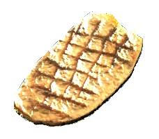

--- Roasted Ant ---
Roasted slices of ant meat prepared at a cooking station. It restores 45 Hit Points upon consumption.
Ant meat x3
- Cut the ant meat into slices approximately 5cm thick.
- Using metal mesh or chain link fence over a fire source, grill the meat on either side.
- Once the meat has distinct grill markings, it's ready!
